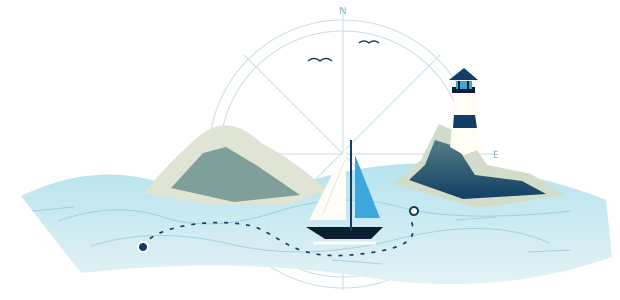
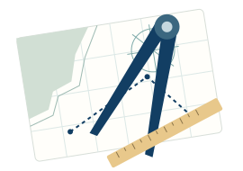

La tua palestra per la patente nautica
Le ultime risposte non sono state salvate.Non possiamo garantire che restino dopo la chiusura.
Il prossimo passo · quiz base
quesiti
Anche al tavolo, con gli strumenti
Il carteggio
fa parte della rotta.
Dedica tempo anche alla carta nautica. Qui trovi esercizi e tecniche da allenare.

Confronti la soluzione e valuti tu la risposta.
Scegli la tua direzione
Puoi cambiare attività in qualsiasi momento.
Hai già una data d’esame?
Puoi aggiungerla quando la conosci.